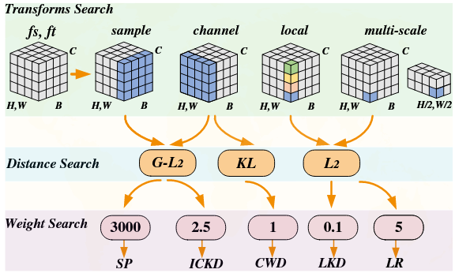
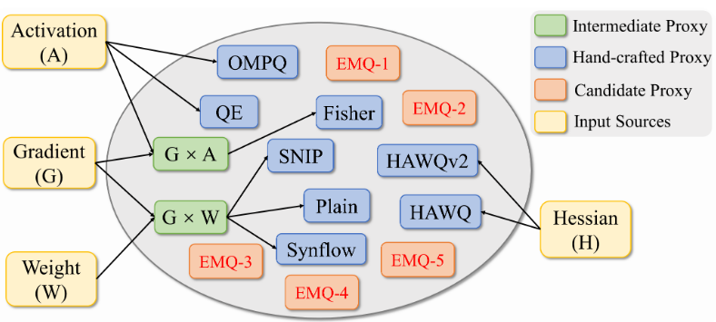
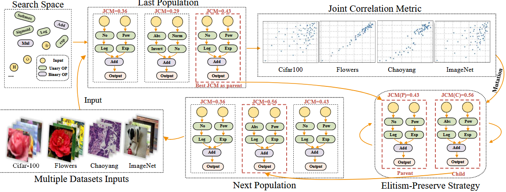
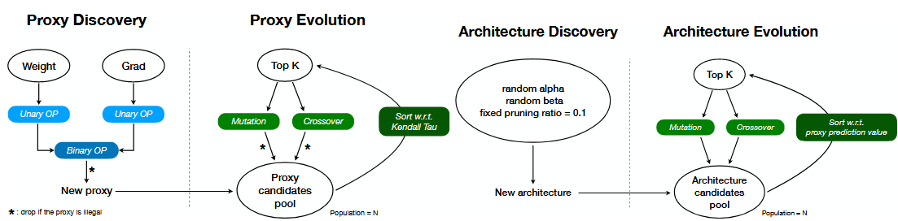
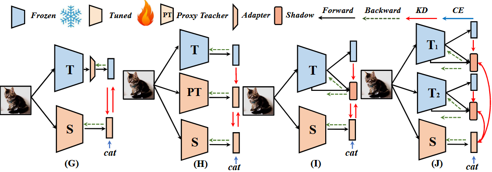
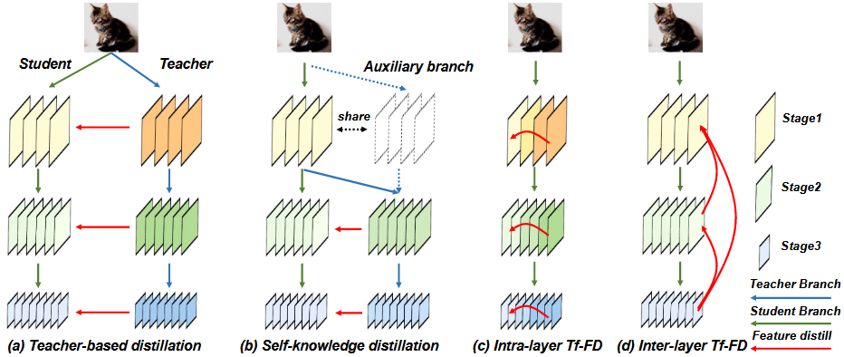
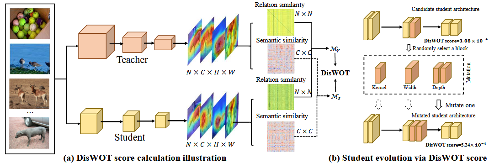
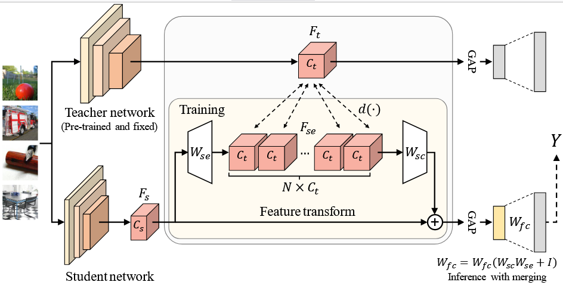

Lujun LI (李路军) Hong Kong University of Science and Technology (HKUST) Address: Clear Water Bay Peninsula, New Territories, Hong Kong Email: lilujunai@gmail.com, lliee@connect.ust.hk Twitter GitHub Google Scholar
About Me
I am a PhD student of the University of Science and Technology supervised by Prof. Yi-Ke Guo.
I am also a researcher of HKGAI.
I received my B.Eng. degree in Electrical Engineering from Central South University (CSU). And I was a postgraduate of Institute of Automation, University of Chinese Academy of Science (CASIA).
My research focus on Efficient Generative AI. I have published some top conferences papers in CVPR/ICCV2/NeurIPS/ICLR/ECCV/AAAI etc.
In addition, I also serve as reviewers for NeurIPS/ICLR/ICML/CVPR/ICCV/ECCV/ACL/AAAI etc.
News: Three papers accepted by AAAI24!
My research interests broadly lie in:
General Efficient AI (e.g., Knowledge Distillation, Quantization, Pruning, etc),
Automated Machine Learning (NAS, KDS, VIT/Attention Search, Symbol Search, etc),
Generative AI (Generate Models, Images & Video Generation, etc).
Large Language Model (Knowledge Distillation, Pruning, MoE, LoRA etc ).
KD-Zero: Evolving Knowledge Distiller for Any Teacher-Student Pairs Lujun Li , Peijie Dong, Anggeng Li, Zimian Wei, Ya Yang.
in Conference on Neural Information Processing Systems (NeurIPS-2023) CCF-A, Top Conference in Machine Learning
[Paper]
[Code]
We present KD-Zero, the first auto-search framework for evolving best distiller from scratch to alleviate teacher-student gaps..

Automated Knowledge Distillation via Monte Carlo Tree Search Lujun Li , Peijie Dong, Zimian Wei, Ya Yang.
in The International Conference on Computer Vision (ICCV-2023), CCF-A, Top Conference in Computer Vision
[Paper]
[Code]
In this paper, we present Auto-KD, the first automated search framework for optimal knowledge distillation design.

EMQ: Evolving Training-free Proxies for Automated Mixed Precision Quantization
Peijie Dong, Lujun Li*, Zimian Wei, Xin Niu, Zhiliang Tian, Hengyue Pan.
in The International Conference on Computer Vision (ICCV-2023) CCF-A, Top Conference in Computer Vision
[Paper]
[Code]
We first build the MQ-Bench-101 and develop an automatic search of proxies framework for MQ via evolving algorithms.

Auto-Prox: Training-Free Vision Transformer Architecture Search via Automatic Proxy Discovery
Zimian Wei, Lujun Li*, Peijie Dong, Zheng Hui, Anggeng Li, Menglong Lu, Hengyue Pan, Dongsheng Li.
in Thirty-Eighth AAAI Conference on Artificial Intelligence (AAAI-2024) CCF-A, Top Conference in Artificial Intelligence
[Paper coming]
[Code coming]
We first build the ViT-Bench-101 and develop zero-cost proxy search for Vision Transformer on multiple datasets.

SasWOT: Real-time Semantic Segmentation Architecture Search WithOut Training
Chendi Zhu, Lujun Li*, Yuli Wu, Zheng Hui, Zhengxing Sun.
in Thirty-Eighth AAAI Conference on Artificial Intelligence (AAAI-2024) CCF-A, Top Conference in Artificial Intelligence
[Paper coming]
[Code coming]
We present the first training-free architecture search framework for Real-time Semantic Segmentation.

Shadow Knowledge Distillation: Bridging Offline and Online Knowledge Transfer Lujun Li , Zhe Jin.
in Conference on Neural Information Processing Systems (NeurIPS-2022) CCF-A, Top Conference in Machine Learning
[Paper]
[Code]
We present SHAKE with reversed distillation and shadow head to bridge offline and online knowledge transfer, achieving superior performance in multiple tasks and scenarios.

Self-Regulated Feature Learning via Teacher-free Feature Distillation Lujun Li .
in European Conference on Computer Vision (ECCV-2022) CCF-B; Top Conference in Computer Vision
[Paper]
[Code]
We we propose Tf-FD for reusing channel-wise and layer-wise meaningful features within the student to provide teacher-like knowledge without an additional model.

DisWOT: Student Architecture Search for Distillation WithOut Training
Peijie Dong, Lujun Li***, Zimian Wei
in IEEE / CVF Computer Vision and Pattern Recognition Conference (CVPR-2023) CCF-A, Top Conference in Computer Vision
[Paper]
[Code]
We propose a strong self-supervised augmented knowledge distillation method from hierarchical feature maps for image classification.

NORM: Knowledge Distillation via N-to-One Representation Matching
Xiaolong Liu, Lujun Li*, Chao Li, Anbang Yao
in International Conference on Learning Representations (ICLR-2023) Top Conference in Machine Learning
[Paper]
[Code]
We presents a new knowledge distillation method via n-to-one representation matching.
Honor
Top 3 in CVPR2022 Second lightweight NAS challenge supernet Track, 2022
Outstanding entrepreneurial undergraduate, 2019
Second Prize (National-level) China Undergraduate electronic design competition, 2017,2018
MCM/ICM -- Honorable Mention, 2016
Review Services
Journal: IJCV;TNNLS;TCSVT
Conference:
2024: ACM MM, ECCV, ICML, AutoML, ACL ;
2023: CVPR, AAAI, ACM MM, ICCV, NeurIPS, ICLR, WACV, AutoML;